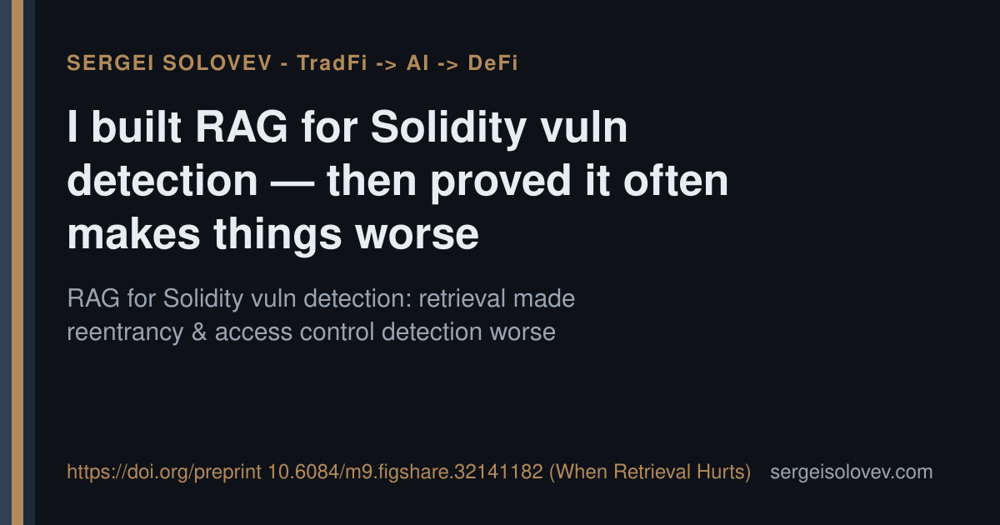

Most RAG pipelines for code analysis get benchmarked on retrieval accuracy. Fewer get benchmarked on whether retrieval actually improves the downstream task — or quietly breaks it.
I ran that second evaluation on Solidity vulnerability detection. The result: adding retrieval-augmented context made detection measurably worse on entire vulnerability classes — reentrancy and access control in particular. The model retrieved plausible-looking examples that shared surface syntax with the target but differed in the properties that determine exploitability, and the noise outweighed the signal.
The finding is not that RAG is wrong for smart contract auditing. It is that retrieval helps when the vulnerability pattern is structurally similar across instances, and hurts when the exploit depends on subtle semantic context that embedding distance cannot distinguish. Knowing which regime you are in before you ship matters more than tuning retrieval hyperparameters after.
This has direct consequences for teams building AI-assisted audit tooling: a RAG layer that performs well on your retrieval metrics can still degrade end-to-end detection. The honest eval is the one most demos skip.
Preprint: https://figshare.com/articles/preprint/when_retrieval_hurts/32141182
#SmartContracts #RAG #ML